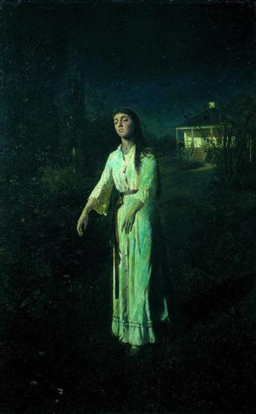

Сомнамбула
Сомнамбула
На картине Ивана Крамского «Сомнамбула» мы видим девушку, которая идёт по дороге лунной ночью. Вот только выглядит героиня сюжета очень необычно: глаза её закрыты, руки слегка поддались вперёд, лицо напряжено и не отображает никаких эмоций. По всей видимости, девушка спит.
В обширном эпистолярном наследии Крамского нет ни слова о работе над "Неизвестной". Не проясняют ситуацию дневники и воспоминания современников - нигде ничего. Какая-то таинственная "фигура умолчания" вместо досконально документированной творческой предыстории создания шедевра, именуемого "Русской Джокондой".
Сомнамбулизм нашёл отражение во многих произведения искусства и литературы, в том числе и в картине Крамского. Правда на полотне художника этот феномен выглядит несколько преувеличено: у девушки неестественно подняты руки, а лицо слишком напряжено. Видимо, живописец решил привнести в свою работу элементы мистики.